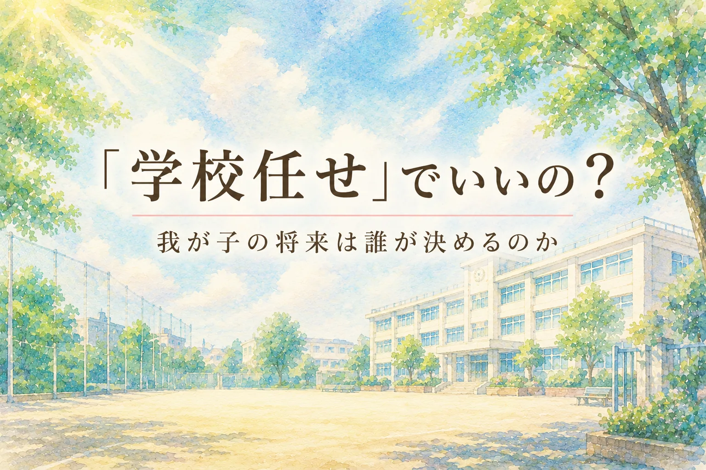

特別支援学校高等部3年生の進路は、進路指導主事だけが背負うものでも、担任だけが抱えるものでも、保護者だけで決めるものでもありません。
本人を中心に、学校、家庭、福祉、企業がどのように情報を持ち寄るべきか。特別支援教育の現場経験をもとに、進路指導のあり方を考えます。
この記事で考えること
- 高等部3年生の進路決定で、保護者の不安をどう扱うか
- 担任と進路指導主事が、それぞれ何を見ているのか
- 就職を「決定」ではなく「移行」として考える理由
- 学校任せにも、保護者の抱え込みにもならない連携の形
進路が現実になる時期
高等部3年生の保護者の表情が変わる時期があります。
春から初夏にかけて現場実習が始まり、夏休み明けには進路先が少しずつ具体化していく。秋が深まるにつれて、「卒業後」という言葉が急に重みを持ち始めます。そして冬休み明けが見えてくるころには、学校生活の終わりが、いよいよ現実のものとして迫ってきます。
これまで「将来のこと」として少し遠くに置いていた問題が、親の目の前に来るのです。
- 我が子は、卒業後どこへ行くのか。
- 働けるのか。働き続けられるのか。
- 福祉サービスを使うのか。
- 家から通えるのか。
- 職場で傷つくことはないか。
- 困ったとき、誰が助けてくれるのか。
- 親亡き後、この子はどう生きていくのか。
高等部3年生の保護者が抱える不安は、決して小さくありません。むしろ、子育ての中で最も重い不安が、この時期に押し寄せてくることがあります。
私は、その不安を軽く見てはいけないと思っています。
制度が変われば、不安は消えるのか
特別支援学校の進路指導を語るとき、どうしても「就職率」や「企業実習」や「法定雇用率」の話になりやすいものです。もちろん、それらは重要です。
厚生労働省「障害者の法定雇用率引上げと支援策の強化について」では、民間企業の障害者法定雇用率は、令和6年4月に2.5％、令和8年7月に2.7％へ段階的に引き上げられることが示されています。
障害者雇用は、今後さらに多くの企業にとって避けて通れない課題になります。
しかし、学校現場にいた者として私は思います。
制度が変われば、子どもの進路が自動的によくなるわけではありません。
企業の受け皿が増えれば、保護者の不安が消えるわけでもありません。
就職先が決まれば、その子の人生が安定するわけでもありません。
むしろ、進路が具体化するほど、不安は現実味を帯びていきます。
「本当にここでよいのか」「この子は続けられるのか」「学校は大丈夫と言うが、家ではこんなに疲れている」「本人は行きたいと言っているが、どこまでわかって言っているのか」。こうした問いを、保護者は胸の内に抱えています。
だからこそ、改めて問いたいのです。特別支援学校の進路は、誰の仕事なのでしょうか。
進路指導主事だけに背負わせるには、重すぎる
特別支援学校には、進路指導主事という役職の先生がいます。
企業実習の調整、実習先の開拓、ハローワークとの連絡、福祉事業所との情報交換、就労支援機関との連携、保護者説明会、卒業後の進路情報の整理。進路指導主事の仕事は、学校の中でも専門性が高く、外部との調整も多い仕事です。
現実には、その進路指導主事、あるいは副主事だけが、生徒の就職のために走り回っている学校も少なくありません。
それは、ある意味では仕方がないことです。担任には日々の授業があります。生活指導、行事、個別の指導計画、保護者対応、教材研究もあります。高等部3年生だからといって、担任が毎日の授業を放り出して企業訪問ばかりするわけにはいきません。
しかし、それでも私は、進路を進路指導主事だけに一手に引き受けさせるやり方には限界があると感じています。
なぜなら、生徒の日常を最もよく見ているのは担任だからです。
- 朝、どのような表情で登校してくるか。
- 予定変更にどのくらい耐えられるか。
- 作業に集中できる時間はどれくらいか。
- 叱責されたときに固まるのか、反発するのか、泣くのか。
- 疲れがたまると、どのようなサインが出るか。
こうした情報は、進路指導主事が面談資料だけで把握できるものではありません。
一方で、担任だけでは見えないものもあります。企業の受け入れ状況、地域の雇用情勢、職場実習の評価基準、就労移行支援や就労継続支援との接続、卒業生の定着状況、企業側が本当に求めている力。これらは、進路指導主事だからこそ蓄積できる情報です。
担任は、生徒の「日常」を見ている。
進路指導主事は、生徒が向かう「社会」を見ている。
その2つをつながなければ、進路は危うくなります。
保護者は、学校に任せきりでよいのか
もう一つ、避けて通れない問いがあります。
保護者は、学校に任せきりでよいのでしょうか。
私は、保護者を責めたいのではありません。むしろ、学校に任せたくなる気持ちはよくわかります。
特別支援学校には進路の蓄積があります。企業実習のルートがあります。福祉事業所との関係があります。制度も知っています。担任も進路指導主事も、日々子どもを見てくれています。
だから保護者が、「学校にお願いしておけば大丈夫」と思うのは自然なことです。
しかし、学校は卒業後の生活を一生引き受けることはできません。
卒業後、毎朝本人を送り出すのは家庭です。仕事から帰ってきた本人の疲れを受け止めるのも家庭です。職場でうまくいかなかったとき、最初に変化に気づくのも家庭です。
であるならば、保護者は「学校に任せる客」ではいられません。
もちろん、保護者が学校とは別に勝手に動き、企業と直接話を進めればよいという意味ではありません。それはそれで危ういことです。本人の適性評価、実習手続き、企業との約束、福祉制度との接続を無視して進めば、学校も企業も本人も混乱します。
必要なのは、保護者の単独行動ではありません。
必要なのは、連携された主体性です。
- 学校に任せきりにしない。
- 学校と競争するように動くのでもない。
- 家庭で見える本人の姿を、学校に伝える。
- 学校で見える本人の姿を、家庭が受け取る。
- 不安を最後まで隠さず、早い段階で言葉にする。
- 本人の希望を、家庭と学校が一緒に確認する。
進路は、学校が決めるものではありません。保護者が決めるものでもありません。本人を中心に、学校と家庭が情報を持ち寄って決めるものです。
学校から見える子どもと、家庭から見える子どもは違う
学校側と保護者側の視点は、必ずしも一致しません。
学校は、集団の中での本人を見ます。作業場面での集中力、指示理解、他者との距離感、実習先からの評価を見ます。
一方、家庭は、生活の中での本人を見ます。朝起きられるか。疲れが翌日に残るか。帰宅後に荒れるか。食事や睡眠が崩れないか。家族にだけ見せる不安がないか。小さい頃からどのようなことでつまずいてきたか。
どちらが正しいかではありません。
学校で落ち着いている子が、家庭では限界を見せていることがあります。家庭では甘えが強く見える子が、学校では驚くほど力を発揮していることもあります。実習先では高く評価されても、家に帰ると疲労で動けなくなる子もいます。
だから、学校の見立てだけでも足りません。家庭の不安だけでも足りません。
両方を合わせて初めて、その子の進路が見えてきます。
保護者の不安は、進路決定を邪魔するものではありません。
むしろ、進路を精密にするための重要な情報です。
進路には、タイミングがある
私が高等部3年生の担任をしていた頃、卒業を待たずに企業へ就職した生徒がいました。
個人が特定されない範囲で言えば、外資系企業でした。縁があり、話が進み、本人にも保護者にも納得がありました。学校としても簡単な判断ではありませんでしたが、卒業まで待つことが、その子にとって最善とは限りませんでした。
その生徒は、楽しみにしていた修学旅行に行けませんでした。
これは小さなことではありません。特別支援学校の生徒にとって、修学旅行は大きな学校行事です。仲間と過ごす時間であり、家族から少し離れて経験を広げる機会でもあります。
それでも本人と保護者は、その進路を選びました。
私はそのとき、進路にはタイミングがあるのだと強く感じました。
教育課程を予定通りに終えることは大切です。学校行事も大切です。卒業式まで仲間と過ごす時間も大切です。
しかし、就職の機会は、必ずしも学校の暦に合わせてやってくるわけではありません。
その子にとって今しかない機会が来たとき、学校は何を優先するのか。本人の希望か。保護者の納得か。教育課程上の整合性か。企業との縁か。長期的な定着可能性か。
そこに絶対の正解はありません。だからこそ、進路指導には、手続きだけではなく判断が必要になります。
最後に崩れる進路は、最後に生まれた問題ではない
逆の経験もあります。
ある生徒は、福祉・介護系の職場への就職がほぼ決まっていました。学校も企業側も準備を進め、本人もその方向で動いていました。
ところが、最後の段階になって、保護者から「やはりやめます」と言われました。
現場は当然、混乱します。企業にも迷惑がかかります。学校も調整に追われます。本人の気持ちも揺れます。当時の私は、高等部3年生の担任として、その重さを直接感じました。
ただ、今振り返ると、そこで単純に保護者を責めることはできないと思います。
保護者には保護者の不安があります。家庭から見える本人の姿があります。口には出せなかった違和感があります。「本当にここでよいのか」という迷いが、最後まで残っていたのかもしれません。
問題は、最後に保護者が出てきたことではありません。
問題は、その前に、学校と家庭が不安を十分に言語化できていたかどうかです。
進路トラブルは、最後に突然起きるように見えます。しかし実際には、最後まで言葉にならなかった不安が、最後に表面化することが多いのです。
「大丈夫です」「お願いします」「本人も頑張っています」「企業側も評価しています」。そうした前向きな言葉の下に、保護者の不安が沈んでいることがあります。
学校は、その沈黙を読まなければなりません。保護者も、その不安を早く言葉にしなければなりません。
就職は、決定ではなく移行である
障害者雇用を取り巻く環境は、確かに変わってきています。
厚生労働省「令和7年 障害者雇用状況の集計結果」では、民間企業に雇用されている障害者数は70万4,610.0人、実雇用率は2.41％とされ、いずれも過去最高を更新したと公表されています。一方で、法定雇用率達成企業の割合は46.0％です。
この数字を、単純に「企業が足りない」と読むだけでは不十分です。
企業にも事情があります。学校にも限界があります。家庭にも不安があります。本人にも揺れがあります。
だからこそ、就職を「決定」として扱ってはいけません。
就職は、移行です。
学校から職場へ。子ども時代から成人期へ。授業時間から労働時間へ。先生との関係から上司・同僚との関係へ。家庭中心の生活から、社会的役割を持つ生活へ。
この移行を、本人一人に背負わせてはいけません。
学校は、就職先を決めるだけでなく、卒業後に支援が切れない状態をつくる必要があります。保護者は、学校に任せきりにせず、家庭で見える本人の姿を伝える必要があります。企業は、善意だけで受け入れるのではなく、職務設計と相談体制を整える必要があります。福祉は、卒業後の生活と就労をつなぐ伴走者になる必要があります。
文部科学省「家庭と教育と福祉の連携『トライアングル』プロジェクト」でも、障害のある子どもたちへの支援には、教育と福祉、家庭が切れ目なく連携することの重要性が示されています。
進路指導は、まさにこの連携が試される場面です。
進路は、進路指導主事だけの仕事ではない
私は、進路指導主事の専門性を軽く見ているのではありません。むしろ、その役割は非常に大きいと思っています。
しかし、進路指導主事だけに背負わせるには、生徒の将来は重すぎます。
進路は、進路指導主事の仕事です。だが、進路指導主事だけの仕事ではありません。
進路は、担任の仕事です。だが、担任だけの仕事でもありません。
進路は、保護者の仕事です。だが、保護者だけで抱えるものでもありません。
そして何より、進路は本人の人生です。
学校が決めるのでもない。家庭が決めるのでもない。企業が選ぶだけのものでもない。
本人を中心に、担任、進路指導主事、保護者、福祉、企業が、互いに見えている情報を持ち寄る。その上で、迷いながら決めていく。それが本来の進路指導ではないかと思います。
我が子の将来を、誰か一人に預けてはいけない
高等部3年生の保護者は、不安で当然です。
不安があるから、迷う。迷うから、確認したくなる。確認するから、学校とのやり取りが増える。ときには、学校側から見ると「今さら」と感じることもあるかもしれません。
しかし、その「今さら」の背景には、保護者が18年近く抱えてきた時間があります。
生まれたときからの不安。診断を受けた日の記憶。就学相談で悩んだ日々。友達関係で傷ついた経験。できることが増えて喜んだ時間。将来を考えるたびに胸が重くなった夜。
そのすべてを持って、保護者は高等部3年生の進路面談の席に座っています。
学校は、その重みを忘れてはならないと思います。
同時に、保護者もまた、学校の現実を知る必要があります。担任には授業があり、進路指導主事には多くの生徒の調整があります。企業には企業の事情があり、福祉には福祉の制度上の制約があります。
だからこそ、早くから話し合う必要があります。
- 高等部3年生になってから慌てるのでは遅い。
- 実習が終わってから本音を出すのでは遅い。
- 内定が近づいてから不安を爆発させるのでは遅い。
高等部1年生から、少なくとも2年生の段階から、本人の働き方、生活の仕方、支援の受け方を話し合っておく必要があります。
「この子は何ができるか」だけではなく、「何があれば続けられるか」を考える。
「どこに就職するか」だけではなく、「どのように生活を保つか」を考える。
「親が安心できる進路」だけではなく、「本人が納得して続けられる進路」を考える。
ここを外すと、進路は形だけ整っても、卒業後に崩れてしまいます。
拍手の先にある生活まで見る
「就職が決まりました」
この言葉は、今でもやはりうれしいものです。
本人の努力があります。保護者の支えがあります。担任の積み重ねがあります。進路指導主事の奔走があります。企業側の理解があります。福祉や関係機関の支援があります。
そのすべてが重なって、ようやく進路は決まります。
だから、拍手してよいと思います。
ただし、そこで安心しすぎてはいけません。
- その子は、働き続けられるか。
- 疲れたときに、疲れたと言えるか。
- 困ったときに、助けを求められるか。
- 家庭は、無理を抱え込みすぎていないか。
- 職場は、本人の特性を理解しているか。
- 学校は、卒業後につながる支援を渡せているか。
就職は、子どもの人生の終点ではありません。むしろ、そこから新しい生活が始まります。
特別支援学校の進路指導とは、就職先を探す仕事だけではありません。本人の未来について、関係者が同じテーブルにつくための仕事です。
そして、保護者が抱える不安は、そのテーブルに置かれるべき大切な資料です。
我が子の将来を、誰か一人に預けてはいけません。
進路指導主事だけに預けてはいけません。担任だけに預けてはいけません。保護者だけで抱えてもいけません。
本人を中心に、学校と家庭と社会が一緒に引き受ける。
それが、障害者雇用の制度が変わっていくこれからの時期に必要な、特別支援学校の進路指導の形ではないかと私は思います。
ご注意：この記事は一般的な情報提供と現場経験に基づく考察です。個別の進路決定、就労可否、福祉サービスの利用、法的判断を代替するものではありません。実際の進路選択では、本人、保護者、学校、進路指導担当、相談支援専門員、ハローワーク、自治体窓口などと相談してください。